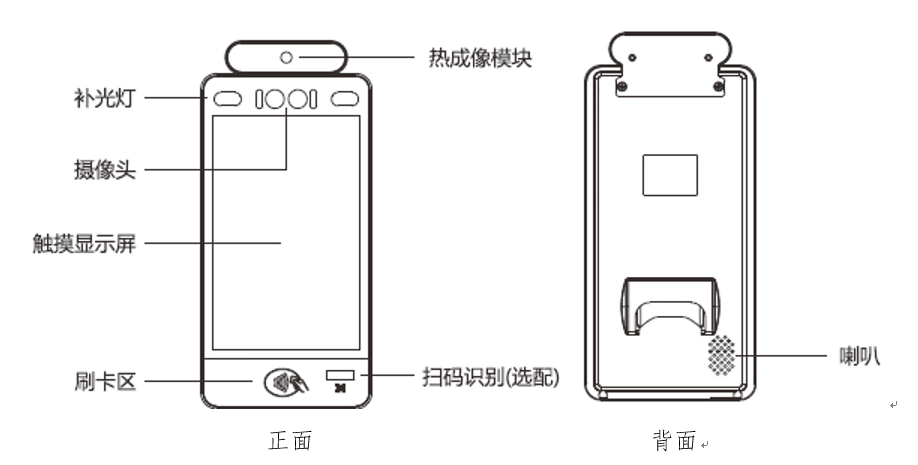
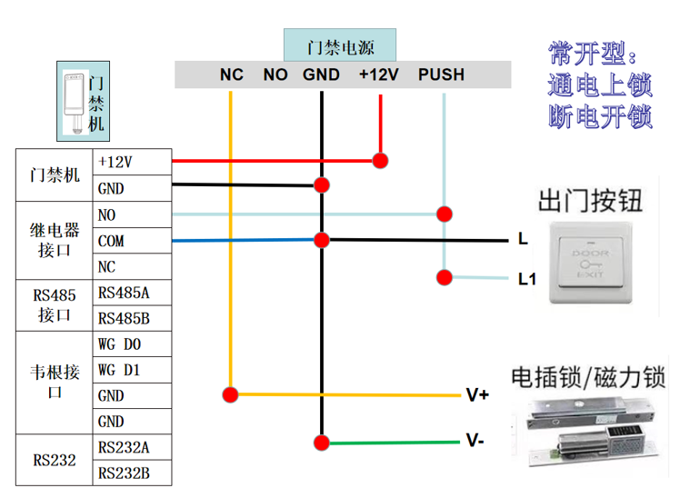
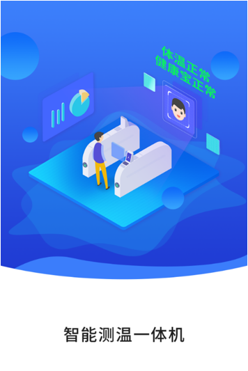
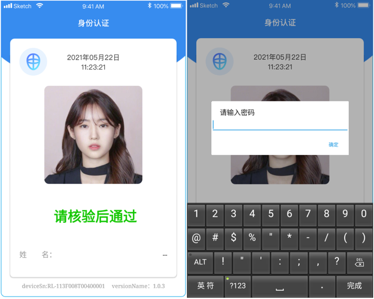
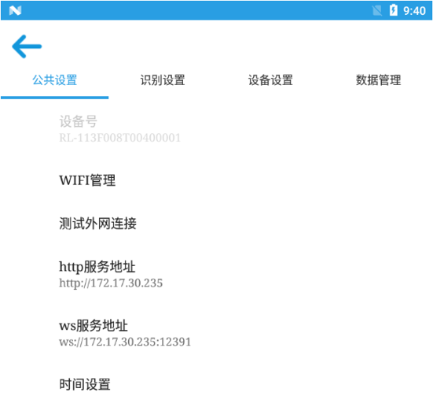
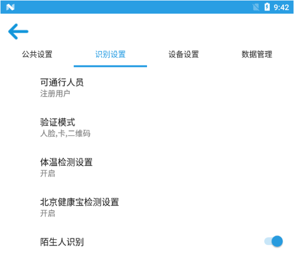
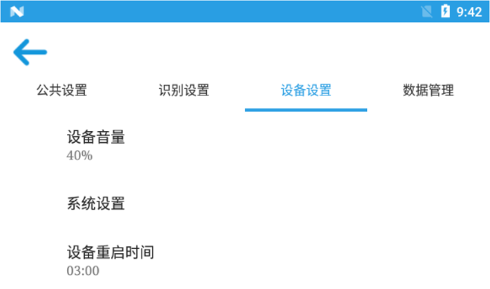
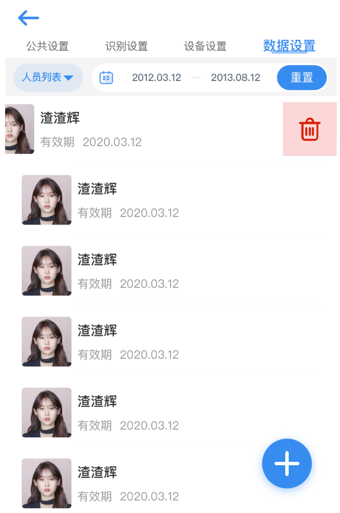
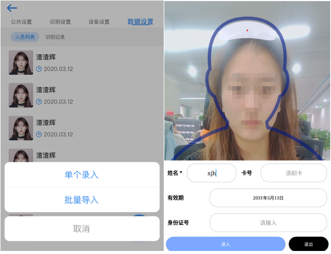
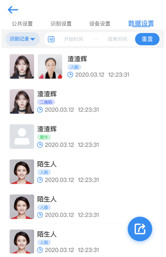

尊敬的用户：
感谢您选择和使用本公司产品。
为了使您更好地使用本产品，请详细阅读本说明书，按照说明书中的步骤操作，并妥善保存以备日后参考。
本公司致力于不断改进产品功能、提高服务质量。本说明书中的内容、图片可能与实物有所不同，功能说明可能因具体型号不同而稍有不同，若与实际产品不同，请以实物为准。
本说明书中所提到的某些部件、外观或功能可能涉及版权。未得本公司的书面许可，不得以任何形式复制或传播本说明书的任何内容。
本公司保留修改本说明书内容和相关产品技术规格的权利。本说明书中的内容若有变动，恕不另行通知。如您有任何疑义，请尽快与我们联系，我们将竭诚为您服务，再次感谢您使用本公司产品。
人脸识别面板机终端是一款人脸识别类门禁终端产品。支持人脸识别、IC卡和二维码等多种组合方式进行身份认证，可用于商业地产、企业大楼、酒店、政府、产业园区、工业园区、校园、小企业、工地、商铺等场所。

| 型号 | ZKDN-ZNMJ01 |
|---|---|
| CPU | RK339六核18GGHz |
| 操作系统 | Android7或以上 |
| 屏幕 | 8英寸液晶屏，分辨率800*1280； 触摸屏：电容，多点触控 |
| 内存+存储 | RAM2G，ROM16G，可选4GRAM |
| WIFI | 802.11b/g/n，2.4GHz |
| 蓝牙 | Bluetooth4.0 |
| 以太网 | 10/100Mbps |
| 摄像头 | 双目摄像头，RGB 200万像素， IR130万像素，宽动态，户外强光下可识别 |
| LED | 白光，RGB摄像头补光光源；红外LED灯，IR摄像头补光光源 |
| 输出继电器 | 1路开关继电器输出, COM\NC\NO |
| 热成像测温 | 测温精度±0.5℃，支持0.5-0.7米 |
| 一二维码识别（选配） | 支持一维、二维码读取 |
| 身份证阅读器（选配） | 支持二代身份证识别功能 |
| NFC | 支持13.56MHz |
| 麦克风 | 单路、16位高保真 |
| 扬声器 | 单路、4Ω/3w |
| USB接口 | 1个 micro USB，调试接囗；1个 typeA-USB |
| RS485接囗 | 工业级串行通信接口，半双工 |
| RS232接囗 | 标准RS232串行通信接口，全双工 |
| 韦根接口 | 支持输入输出，支持26位和34位等格式的韦根接口 |
| 复位按钮 | 系统复位按钮 |
| 电源 | 12V/2A |
| 按键开门接口 | 物理按键开门输入接口，APP扫描端口状态变化控制开关门 |
| 1 | 继电器接口 | NO |
| COM | ||
| NC | ||
| 2 | RS485接口 | RS485A |
| RS485B | ||
| 3 | 韦根接口 | WG D0 |
| WG D1 | ||
| GND | ||
| 4 | RS232 | GND |
| RS232A | ||
| RS232B | ||
| 5 | RJ45 | |
| 6 | USB接口 | |
| 7 | 复位按键 | |
| 8 | 电源 | |

设备上电会自动启动，启动画面如下图：

设备默认已激活，设备进入到身份认证页面：

长按3秒面部识别框，在界面软键盘上输入密码，密码输入成功后进入后台设备设置界面。

WIFI管理：
测试外网连接：连接wifi后点击“测试外网连接”可测试设备连接外网情况。
http服务地址：后台管理地址，设备开启后已完成初始化，可对http服务地址进行修改。
ws服务地址：与管理后台建立长连接的服务地址，设备开启后默认已完成初始化，可对ws服务地址进行修改。
时间设置：可对系统时间进行修改，包括自动确定日期和时间、自动确定时区及使用24小时制。

可通行人员：单选，包括注册用户和任何人。
验证模式：多选，包括人脸、卡和二维码。
体温检测设置：单选，包括关闭、仅提示和开启。
北京健康宝检测设置：单选，包括关闭、仅提示和开启。
陌生人识别：开启后可检测陌生人并进行声音提示。

可对设备音量、系统设置和设备重启时间进行设置。

数据类型分为人员列表和识别记录。
（1）人员列表
人员列表中包括从管理后台下发到设备上人员信息和通过设备添加的人员信息。人员信息显示项包括人脸照片、姓名、有效期。
新增人员：点击右下角的“+”选择“单个录入”弹出界面，如下图所示：

按要求填写相应字段，各字段填写要求如下：
信息采集完毕后在界面下方点击“录入”按钮，系统提示“添加成功”并清除数据可进行再次采集；点击“退出”按钮即退出人员信息采集界面。
批量导入：系统识别外接USB设备中的excel文件，系统自动进行人员信息导入。
删除人员：在人员列表中选择要删除的数据项，向左滑动数据项，点击“删除”图标即完成人员信息删除。
（2）识别记录
识别记录如下图所示：

未连接网络情况下对人员识别信息进行记录，当设备连接网络后自动将识别记录数据上传至管理后台，识别记录信息包括人脸照片、识别照片、姓名、识别类型、识别时间。
查询：系统支持按照识别时间进行精确查询，点击“重置”按钮清空识别时间查询条件。
删除：在识别记录中选择要删除的人员，向左滑动数据项，点击“删除”图标即完成记录删除。
导出：系统支持按照识别时间范围进行查询，将查询结果以excel的方式导出到外接USB设备中。